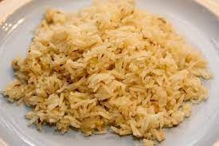

Odin Rice!

delicious rice flavoured with garlic
This rice is steamed with salt and infused with garlic and chives to give a delicate but balanced taste
Ingredients
- 1 cup - basmati rice
- 2 cups - water
- 3 cloves - garlic
- 2 teaspoons - chives
Steps
- place rice into rice cooker
- add 2 cups water to rice cooker
- crush garlic and add to rice cooker
- add the chives let Cook